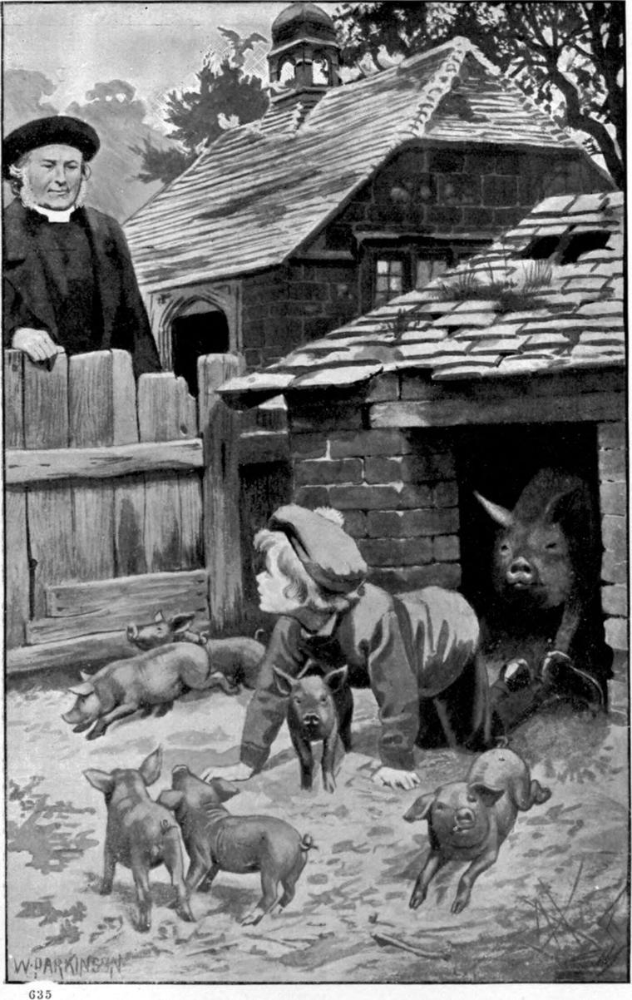

After a year or two, Mr. Porson became anxious lest the boy should grow up too unlike other boys—lest he should not be manly, but of a too gently sad behaviour. He began, therefore, to take him with him about the parish, and was delighted to find him show extraordinary endurance. He would walk many miles, and come home less fatigued than his companion. To be sure, he had not much weight to carry; but it seemed to Mr. Porson that his utter freedom from thought about himself had a large share in his immunity from weariness. He continued slight and thin—which was natural, for he was growing fast; but the muscles of his little bird-like legs seemed of steel. The spindle-shanks went striding, striding without a check, along the roughest roads, the pale face shining atop of them like a sweet calm moon. To Mr. Porson’s eyes, the moon, stooping, as she sometimes seems to do, downward from the sky, always looked like him. The child woke something new in the heart and mind of every one that loved him, but was himself unconscious of his influence. His company was no check to his father when meditating, after his habit as he walked, what he should say to his people the next Sunday. For the good man never wrote or read a sermon, but talked to his people as one who would meet what was in them with what was in him. Hence they always believed “the parson meant it.” He never said anything clever, and never said anything unwise; never amused them, and never made them feel scornful, either of him or of any one else.
Instead of finding the presence of Clare distract his thoughts, he had at times a curious sense that the boy was teaching him—that his sermon was running before, or walking sedately on this side of him or that. For Clare could run like the wind; and did run after butterflies, dragon-flies, or anything that offered a chance of seeing it nearer; but he never killed, and seldom tried to catch anything, if but for a moment’s examination. The swiftest run would scarcely heighten the colour of his pale cheeks.

He soon came to be known in the farm-houses of the parish. The farmer-families were a little shy of him at first, fancying him too fine a little gentleman for them; but as they got to know him, they grew fond of him. They called him “the parson’s man,” which pleased Clare. But one old woman called him “the parson’s cherubim.”
One day Mr. Porson was calling at the house of the largest farm in the parish, the nearest house to the parsonage. The farmer’s wife was ill, and having to go to her room to see her, he said to the boy—
“Clare, you run into the yard. Give my compliments to any one you meet, and ask him to let you stay with him.”
When the time came for their departure, Mr. Porson went to find him. He did not call him; he wanted to see what he was about. Unable to discover him, and coming upon no one of whom he might inquire, for it was hay-time and everybody in the fields, he was at last driven to use his voice.
He had not to call twice. Out of the covered part of the pigsty, not far from which the parson stood, the boy came creeping on all fours, followed by a litter of half-grown, grunting, gamboling pigs.
“Here I am, papa!” he cried.
“Clare,” exclaimed his father, “what a mess you have made of yourself!”
“I gave them your compliments,” answered the boy, as he scrambled over the fence with his father’s assistance, “and asked them if I might stay with them till you were ready. They said yes, and invited me in. I went in; and we’ve been having such games! They were very kind to me.”
His father turned involuntarily and looked into the sty. There stood all the pigs in a row, gazing after the boy, and looking as sorry as their thick skins and bony snouts would let them. Their mother rose in a ridge behind them, gazing too. Mr. Skymer always spoke of pigs as about the most intelligent animals in the world.
I do not know when or where or how his love of the animals began, for he could not tell me. If it began with the pigs, it was far from ending with them.
The next day he asked his father if he might go and call upon the pigs.
“Have you forgotten, Clare,” said his mother, “what a job Susan and I had with your clothes? I wonder still how you could have done such a thing! They were quite filthy. When I saw you, I had half a mind to put you in a bath, clothes and all. I doubt if they are sweet yet!”
“Oh, yes, they are, indeed, mamma!” returned Clare; “and you know I shall be careful after this! I shall not go into their house, but get the farmer to let them out. I’ve thought of a new game with them!”
His mother consented; the farmer did let the pigs out; and Clare and they had a right good game together among the ricks in the yard.
His growing nature showed itself in a swiftly widening friendship for live things. The spreading ripples of his affection took in the cows and the horses, the hens and the geese, and every creature about the place, till at length it had to pull up at the moles, because he could not get at them. I doubt if he would have liked them if he had seen one eat a frog! He called the pigs little brothers, and the horses and cows big brothers, and was perfectly at home with them before people knew he cared for their company. I think his absolute simplicity brought him near to the fountain of life, or rather, prevented him from straying from it; and this kept him so alive himself, that he was delicately sensitive to all life. He felt himself pledged to all other life as being one with it. Its forms were therefore so open to him as to seem familiar from the first. He knew instinctively what went on in regions of life differing from his own—knew, without knowing how, what the animals were thinking and feeling; so was able to interpret their motions, even the sudden changes in their behaviour.
There was one dangerous animal on the place—a bull, of which the farmer had often said he must part with him, or he would be the death of somebody. One morning he was struck with terror to find Clare in the stall with Nimrod. The brute was chained up pretty short, but was free enough for terrible mischief: Clare was stroking his nose, and the beast was standing as still as a bull of bronze, with one curved and one sharp, forward-set, wicked-looking horn in alarming proximity to the angelic face. The farmer stood in dismay, still as the bull, afraid to move. Clare looked up and smiled, but his delicate little hand went on caressing the huge head. It was one of God’s small high creatures visiting with good news of hope one of his big low creatures—a little brother of Jesus Christ bringing a taste of his father’s kingdom to his great dull bull of a brother. The farmer called him. The boy came at once. Mr. Goodenough told him he must not go near the bull; he was fierce and dangerous. Clare informed him that he and the bull had been friends for a long time; and to prove it ran back, and before the farmer could lay hold of him, was perched on the animal’s shoulders. The bull went on eating the grass in the manger before him, and took as little heed of the boy as if it were but a fly that had lighted on him, and neither tickled nor stung him.
By degrees he grew familiar with all the goings on at the farm, and drew nearer to a true relation with the earth that nourishes all. Where the soil was not too heavy, the ploughman would set him on the back of the near horse, and there he would ride in triumph to the music of the ploughman’s whistle behind. His was not the pomp of the destroyer who rides trampling, but the pomp of the saviour drawing forth life from the earth. In the summer the hayfield knew him, and in the autumn the harvest-field, where busily he gathered what the earth gave, and for himself strength, a sense of wide life and large relations. The very mould, not to say the grass-blades and the daisies, was dear to him. He was more sympathetic with the daisies ploughed down than was even Burns, for he had a strong feeling that they went somewhere, and were the better for going; that this was the way their sky fell upon them.
All the people on the farm, all the people of the village, every one in the parish knew the boy and his story. From his gentleness and lovingkindness to live things, there were who said he was half-witted; others said he saw ghosts. The boys of the village despised, and some hated him, because he was so unlike them. They called him a girl because where they tormented he caressed. At this he would smile, and they durst not lay hands on him.
The days are long in boyhood, and Clare could do a many things in one. There was the morning, the forenoon, and the long afternoon and evening! He could help on the farm; he could play with ever so many animals; he could learn his lessons, which happily were not heavy; he could read any book he pleased in his father’s library, where Paradise Lost was his favourite; he could nurse little “Maly.” He had the more time for all these that he had no companion of his own age, no one he wanted to go about with after school-hours. His father was still his chief human companion, and neither of them grew tired of the other.
The most remarkable thing in the child was the calm and gentle greatness of his heart. You often find children very fond of one or two people, who, perhaps, in evil return, want to keep them all to themselves, and reproach them for loving others. Many persons count it a sign of depth in a child that he loves only one or two. I doubt it greatly. I think that only the child who loves all life can love right well, can love deeply and strongly and tenderly the lives that come nearest him. Low nurses and small-hearted mothers dwarf and pervert their children, doing their worst to keep them from having big hearts like God. Clare had other teaching than this. He had lost his father and mother, but many were given him to love; and so he was helped to wait patiently till he found them again. God was keeping them for him somewhere, and keeping him for them here.
The good for which we are born into this world is, that we may learn to love. I think Clare the most enviable of boys, because he loved more than any one of his age I have heard of. There are people—oh, such silly people they are!—though they may sometimes be pleasing—who are always wanting people to love them. They think so much of themselves, that they want to think more; and to know that people love them makes them able to think more of themselves. They even think themselves loving because they are fond of being loved! You might as soon say because a man loves money he is generous; because he loves to gather, therefore he knows how to scatter; because he likes to read a story, therefore he can write one. Such lovers are only selfish in a deeper way, and are more to blame than other selfish people; for, loving to be loved, they ought the better to know what an evil thing it is not to love; what a mean thing to accept what they are not willing to give. Even to love only those that love us, is, as the Lord has taught us, but a pinched and sneaking way of loving. Clare never thought about being loved. He was too busy loving, with so many about him to love, to think of himself. He was not the contemptible little wretch to say, “What a fine boy I am, to make everybody love me!” If he had been capable of that, not many would have loved him; and those that did would most of them have got tired of loving a thing that did not love again. Only great lovers like God are able to do that, and they help God to make love grow. But there is little truth in love where there is no wisdom in it. Clare’s father and mother were wise, and did what they could to make Clare wise.
Also the animals, though they were not aware of it, did much to save him from being spoiled by the humans whom the boy loved more than them. For Clare’s charity began at home. Those who love their own people will love other people. Those who do not love children will never love animals right.
Here I will set down a strange thing that befell Clare, and caused him a sore heart, making him feel like a traitor to the whole animal race, and influencing his life for ever. I was at first puzzled to account for the thing without attributing more imagination to the animals—or some of them—than I had been prepared to do; but probably the main factor in it was heart-disease.
He had seen men go out shooting, but had never accompanied any killers. I do not quite understand how, as in my story, he came even to imitate using a gun. There was nothing in him that belonged to killing; and that is more than I could say for myself, or any other man I know except Clare Skymer.
He was at the bottom of the garden one afternoon, where nothing but a low hedge came between him and a field of long grass. He had in his hand the stick of a worn-out umbrella. Suddenly a half-grown rabbit rose in the grass before him, and bolted. From sheer unconscious imitation, I believe, he raised the stick to his shoulder, and said Bang. The rabbit gave a great bound into the air, fell, and lay motionless. With far other feelings than those of a sportsman, Clare ran, got through the hedge, and approached the rabbit trembling. He could think nothing but that the creature was playing him a trick. Yet he was frightened. Only how could he have hurt him!
“I dare say the little one knows me,” he said to himself, “and wanted to give me a start! He couldn’t tell what a start it would be, or he wouldn’t have done it.”
When he drew near, however, “the little one” did not, as he had hoped and expected, jump up and run again. With sinking heart Clare went close up, and looked down on it. It lay stretched out, motionless. With death in his own bosom he stooped and tenderly lifted it. The rabbit was stone-dead! The poor boy gazed at it, pressed it tenderly to his heart, and went with it to find his mother. The tears kept pouring down his face, but he uttered no cry till he came to her. Then a low groaning howl burst from him; he laid the dead thing in her lap, and threw himself on the floor at her feet in an abandonment of self-accusation and despair.
It was long before he was able to give her an intelligible account of what had taken place. She asked him if he had found it dead. In answer he could only shake his head, but that head-shake had a whole tragedy in it. Then she examined “the little one,” but could find no mark of any wound upon it. When at length she learned how the case was, she tried to comfort him, insisting he was not to blame, for he did not mean to kill the little one. He would not hearken to her loving sophistry.
“No, mother!” he said through his sobs; “I wouldn’t have blamed myself, though I should have been very sorry, if I had killed him by accident—if I had stepped upon him, or anything of that kind; but I meant to frighten him! I looked bad at him! I made him think I was an enemy, and going to kill him! I shammed bad—and so was real bad.”
He stopped with a most wailful howl.
“Perhaps he knew me,” he resumed, “and couldn’t understand it. It was much worse than if I had shot him. He wouldn’t have known then till he was dead. But to die of terror was horrible. Oh, why didn’t I think what I was doing?”
“Nobody could have thought of such a thing happening.”
“No; but I ought to have thought, mother, of what I was doing. I was trying to frighten him! I must have been in a cruel mood. Why didn’t I think love to the little one when I saw him, instead of thinking death to him? I shall never look a rabbit in the face again! My heart must have grown black, mother!”
“I don’t believe there is another rabbit in England would die from such a cause,” persisted his mother thoughtfully.
“Then what a superior rabbit he must have been!” said Clare. “To think that I pulled down the roof of his church upon him!”
He burst into a torrent of tears, and ran to his own room. There his mother thought it better to leave him undisturbed. She wisely judged that a mind of such sensibility was alone capable of finding the comfort to fit its need.
Such comfort he doubtless did find, for by the time his mother called him to tea, calmness had taken the place of the agony on his countenance. His mother asked him no questions, for she as well as her husband feared any possible encouragement to self-consciousness. I imagine the boy had reflected that things could not go so wrong that nobody could set them right. I imagine he thought that, if he had done the rabbit a wrong, as he never for a moment to the end of his life doubted he had, he who is at the head of all heads and the heart of all hearts, would contrive to let him tell the rabbit he was sorry, and would give him something to do for the rabbit that would make up for his cruelty to him. He did once say to his mother, and neither of them again alluded to the matter, that he was sure the rabbit had forgiven him.
“Little ones are so forgiving, you know, mother!” he added.
Is it any wonder that my friend Clare Skymer should have been no sportsman?